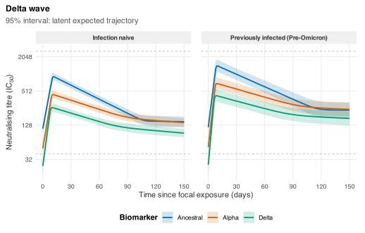
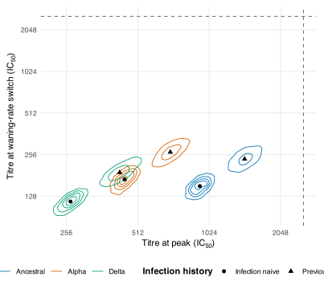
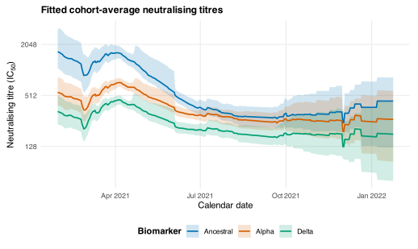
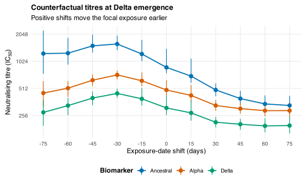

Applied case study: Delta-wave neutralising antibodies
Source:vignettes/case-study.Rmd
case-study.RmdThe kinetics model was developed for the analysis in Russell et al.,
“Real-time estimation of immunological responses against emerging
SARS-CoV-2 variants in the UK: a mathematical modelling study” (Lancet Infectious
Diseases, 2024). This vignette reconstructs the Delta-wave analyses
from the former epikinetics case study using the current
package interface.
The aim is to reproduce the analysis rather than the exact appearance
of the published multi-wave figures. The package includes the
corresponding ba2.csv and xbb.csv data, so the
same workflow can be repeated for those waves.
Fitting is disabled during an ordinary package build because the full example requires CmdStan and a substantive MCMC run. The figures shown in that case are reference figures generated by the same code from a completed fit. To refit the model and regenerate every figure from a source checkout, restart R, ensure CmdStan is available, and run:
Sys.setenv(EPIKINETICS_RUN_CASE_STUDY = "true")
rmarkdown::render("vignettes/case-study.Rmd")Prepare and fit the Delta-wave data
The bundled data contain neutralisation measurements against Ancestral, Alpha, and Delta virus, together with vaccination/exposure dates and participant infection history.
library(epikinetics)
library(ggplot2)
case_palette <- c(
Ancestral = "#0072B2",
Alpha = "#D55E00",
Delta = "#009E73"
)
case_theme <- theme_minimal(base_size = 11) +
theme(
panel.grid.minor = element_blank(),
legend.position = "bottom",
legend.title = element_text(face = "bold"),
strip.text = element_text(face = "bold"),
plot.title = element_text(face = "bold", size = 12),
plot.margin = margin(8, 10, 8, 8)
)
delta_data <- read.csv(
system.file("extdata", "delta.csv", package = "epikinetics")
)
delta_prepared <- prepare_epikinetics_data(
delta_data,
formula = ~ infection_history,
covariate_parameters = "all",
participant_parameters = c(
"baseline", "boost_rate", "early_waning_rate", "late_waning_rate"
),
biomarker_order = c("Ancestral", "Alpha", "Delta"),
lower_limit = 40,
upper_limit = 2560
)
delta_prepared
#> Prepared epikinetics model data
#> Observations: 2255
#> Participants: 335
#> Biomarkers: 3 (Ancestral, Alpha, Delta; explicit order)
#> Covariates: infection_history
#> Effects on: baseline, time_to_peak, waning_duration, boost_rate, early_waning_rate, late_waning_rate
#> Random effects: baseline, boost_rate, early_waning_rate, late_waning_rate
#> Censoring: none=2003, left=126, right=126
#> Time range: 0 to 578 since exposure
#> Model scale: log2(value / 1); range 2.321928 to 11.321928
#> Exposure: one fixed focal exposure per participant
summary(delta_prepared)
#> Prepared epikinetics model-data summary
#> observations participants biomarkers covariates
#> 2255 335 3 1
#>
#> Ranges
#> quantity minimum maximum
#> time_since_exposure 0.000000 578.00000
#> response 5.000000 2560.00000
#> model_response 2.321928 11.32193
#>
#> Censoring
#> censoring observations
#> none 2003
#> left 126
#> right 126
#>
#> Participant observation counts
#> Min. 1st Qu. Median Mean 3rd Qu. Max.
#> 3.000 5.000 6.000 6.731 9.000 14.000
#>
#> Formula: ~infection_history
#> Transformation: log2(value / 1)
#> Model-matrix columns: infection_historyPreviously infected (Pre-Omicron)
#> Formula affects: baseline, time_to_peak, waning_duration, boost_rate, early_waning_rate, late_waning_rate
#> Participant random effects: baseline, boost_rate, early_waning_rate, late_waning_rate
#> Biomarker order (explicit): Ancestral, Alpha, Delta
#> Factor reference levels: infection_history=Infection naive
#>
#> Design-column mapping
#> design_column term
#> infection_historyPreviously infected (Pre-Omicron) infection_history
#> variables level reference_level
#> infection_history Previously infected (Pre-Omicron) Infection naive
#> label
#> infection_history=Previously infected (Pre-Omicron) (vs Infection naive)
table(epikinetics_data(delta_prepared)$censoring)
#>
#> left none right
#> 126 2003 126
prediction_grid(delta_prepared)
#> .profile infection_history
#> 1 1 Infection naive
#> 2 2 Previously infected (Pre-Omicron)The assay bounds here match the case-study analysis. Values at or below 40 are treated as left-censored and values at or above 2560 as right-censored. The formula uses ordinary treatment contrasts: the population parameters describe the reference infection-history category and the regression coefficients describe shifts from it. This replaces the redundant no-intercept encoding in the old vignette.
delta_fit <- fit_epikinetics(
delta_prepared,
chains = 4,
parallel_chains = 4,
threads_per_chain = 2,
iter_warmup = 1000,
iter_sampling = 1000,
adapt_delta = 0.95,
seed = 2026
)
diagnose_epikinetics(delta_fit)Do not interpret the following summaries until all chains have completed and the sampler diagnostics are acceptable.
Conditional population trajectories
The first analysis shows the fitted population trajectory for each biomarker and infection-history category. These are conditional population curves: they include the fitted infection-history effects but no participant random effect.
delta_population <- predict(
delta_fit,
type = "population",
times = 0:150,
ndraws = 2000
)
head(delta_population)
plot(delta_population, central = "median") +
labs(
title = "Delta wave",
x = "Time since focal exposure (days)",
y = expression(paste("Neutralising titre (IC"[50], ")"))
) +
scale_x_continuous(breaks = seq(0, 150, by = 30))
Conditional population trajectories after the focal exposure. Lines show posterior medians, ribbons show 95% credible intervals for the latent trajectories, and dashed lines mark assay limits.
The line is the posterior median latent trajectory and the ribbon is
its 95% credible interval. Biomarkers are overlaid by colour and
infection-history categories define the panels. Dashed horizontal lines
mark the censoring limits. Both posterior means and medians remain
available in delta_population.
Peak and waning-switch values
The former case study called the second quantity a “set point.” In the fitted model it is more precisely the value at the transition from early to late waning: the late rate is estimated and is not fixed at zero.
posterior_parameters(level = "profile", summary = FALSE)
already returns the derived response-scale values at the peak and at
this waning-rate switch.
profile_draws <- posterior_parameters(
delta_fit,
level = "profile",
summary = FALSE,
ndraws = 2000
)
peak_switch_centres <- aggregate(
cbind(peak_response, waning_change_response) ~
biomarker + infection_history,
data = profile_draws,
FUN = median
)
figure_4_delta <- ggplot(
profile_draws,
aes(
x = peak_response,
y = waning_change_response,
colour = biomarker
)
) +
stat_density_2d(
aes(group = interaction(infection_history, biomarker)),
bins = 5,
linewidth = 0.4
) +
geom_point(
data = peak_switch_centres,
colour = "black",
size = 2,
inherit.aes = FALSE,
mapping = aes(
x = peak_response,
y = waning_change_response,
shape = infection_history
)
) +
geom_vline(xintercept = 2560, linetype = "dashed", colour = "grey45") +
geom_hline(yintercept = 2560, linetype = "dashed", colour = "grey45") +
scale_x_continuous(trans = "log2") +
scale_y_continuous(trans = "log2") +
scale_colour_manual(values = case_palette) +
labs(
x = expression(paste("Titre at peak (IC"[50], ")")),
y = expression(paste("Titre at waning-rate switch (IC"[50], ")")),
colour = "Biomarker",
shape = "Infection history"
) +
case_theme
print(figure_4_delta)
Joint posterior distributions of the response at peak and at the transition from early to late waning. Contours distinguish biomarker and infection-history profiles; black points mark posterior medians.
The draw-level table can also be used to calculate the proportional change between the two points:
Calendar-time cohort trajectories
The old Figure 5 analysis placed fitted participant trajectories on the calendar using each participant’s focal-exposure date and then averaged them. The helper code below performs the same scientific operation using the public individual-prediction interface. It processes participants in chunks so the complete draw-by-participant-by-biomarker-by-time array is never held in memory.
When bootstrap_participants = TRUE, each posterior draw
receives one participant bootstrap sample whose weights are retained
across all dates and biomarkers. This keeps each bootstrapped
participant’s complete trajectory together. The former implementation
resampled independently within every date/biomarker/draw group, which
added discontinuous Monte Carlo variation to the curve.
case_study_participants <- function(fit, minimum_followup = 50) {
observations <- epikinetics_data(fit)
exposure <- unique(observations[c("participant", "exposure_time")])
if (anyDuplicated(exposure$participant)) {
stop("Exposure time is not constant within participant.")
}
followup <- aggregate(
observations$time_since_exposure,
by = list(participant = observations$participant),
FUN = max
)
names(followup)[2L] <- "max_followup"
out <- merge(exposure, followup, by = "participant", sort = FALSE)
out$max_followup <- pmax(out$max_followup, minimum_followup)
out$exposure_date <- as.Date(out$exposure_time)
if (anyNA(out$exposure_date)) {
stop("This case-study helper requires date-like exposure times.")
}
out
}
case_study_weights <- function(draw_ids, participants, bootstrap, seed) {
weights <- matrix(
1,
nrow = length(draw_ids),
ncol = length(participants)
)
if (!bootstrap) return(weights)
if (!is.null(seed)) set.seed(seed)
for (draw in seq_along(draw_ids)) {
weights[draw, ] <- tabulate(
sample.int(
length(participants),
size = length(participants),
replace = TRUE
),
nbins = length(participants)
)
}
weights
}
case_study_combine <- function(current, addition, groups) {
if (is.null(current)) return(addition)
combined <- rbind(current, addition)
aggregate(
combined[c("total", "count")],
by = combined[groups],
FUN = sum
)
}
calendar_cohort_draws <- function(
fit,
ndraws = 250,
exposure_shift = 0,
participant_chunk_size = 5,
minimum_followup = 50,
bootstrap_participants = TRUE,
seed = 1401) {
participant_info <- case_study_participants(fit, minimum_followup)
participants <- participant_info$participant
chunks <- split(
participants,
ceiling(seq_along(participants) / participant_chunk_size)
)
times <- 0:max(participant_info$max_followup)
accumulated <- NULL
weights <- NULL
draw_ids <- NULL
biomarker_order <- NULL
for (participant_chunk in chunks) {
prediction <- predict(
fit,
type = "individual",
participants = participant_chunk,
times = times,
summary = FALSE,
ndraws = ndraws,
max_rows = Inf
)
if (is.null(draw_ids)) {
draw_ids <- unique(prediction$.draw)
biomarker_order <- levels(prediction$biomarker)
weights <- case_study_weights(
draw_ids,
participants,
bootstrap_participants,
seed
)
}
rows <- match(prediction$participant, participant_info$participant)
keep <- prediction$time <= participant_info$max_followup[rows]
prediction <- prediction[keep, , drop = FALSE]
rows <- rows[keep]
prediction$calendar_date <-
participant_info$exposure_date[rows] - exposure_shift + prediction$time
prediction$.weight <- weights[cbind(
match(prediction$.draw, draw_ids),
match(prediction$participant, participants)
)]
partial <- aggregate(
data.frame(
total = prediction$estimate * prediction$.weight,
count = prediction$.weight
),
by = prediction[c(".draw", "biomarker", "calendar_date")],
FUN = sum
)
accumulated <- case_study_combine(
accumulated,
partial,
c(".draw", "biomarker", "calendar_date")
)
}
accumulated <- accumulated[accumulated$count > 0, , drop = FALSE]
accumulated$estimate <- accumulated$total / accumulated$count
accumulated$exposure_shift <- exposure_shift
accumulated$biomarker <- factor(
as.character(accumulated$biomarker),
levels = biomarker_order
)
accumulated[c(
".draw", "biomarker", "calendar_date", "exposure_shift", "estimate"
)]
}
cohort_at_date_draws <- function(
fit,
calendar_date,
exposure_shifts,
ndraws = 100,
participant_chunk_size = 10,
minimum_followup = 50,
bootstrap_participants = TRUE,
seed = 1401) {
participant_info <- case_study_participants(fit, minimum_followup)
participants <- participant_info$participant
requested <- expand.grid(
participant = participants,
exposure_shift = unique(exposure_shifts),
KEEP.OUT.ATTRS = FALSE,
stringsAsFactors = FALSE
)
participant_rows <- match(requested$participant, participants)
requested$time <- as.numeric(
as.Date(calendar_date) -
(participant_info$exposure_date[participant_rows] -
requested$exposure_shift)
)
requested$max_followup <-
participant_info$max_followup[participant_rows]
requested <- requested[
requested$time >= 0 & requested$time <= requested$max_followup,
c("participant", "exposure_shift", "time"),
drop = FALSE
]
times <- sort(unique(requested$time))
chunks <- split(
participants,
ceiling(seq_along(participants) / participant_chunk_size)
)
accumulated <- NULL
weights <- NULL
draw_ids <- NULL
biomarker_order <- NULL
for (participant_chunk in chunks) {
requested_chunk <- requested[
requested$participant %in% participant_chunk,
,
drop = FALSE
]
if (!nrow(requested_chunk)) next
prediction <- predict(
fit,
type = "individual",
participants = participant_chunk,
times = times,
summary = FALSE,
ndraws = ndraws,
max_rows = Inf
)
prediction <- merge(
prediction,
requested_chunk,
by = c("participant", "time"),
sort = FALSE
)
if (is.null(draw_ids)) {
draw_ids <- unique(prediction$.draw)
biomarker_order <- levels(prediction$biomarker)
weights <- case_study_weights(
draw_ids,
participants,
bootstrap_participants,
seed
)
}
prediction$.weight <- weights[cbind(
match(prediction$.draw, draw_ids),
match(prediction$participant, participants)
)]
partial <- aggregate(
data.frame(
total = prediction$estimate * prediction$.weight,
count = prediction$.weight
),
by = prediction[c(".draw", "biomarker", "exposure_shift")],
FUN = sum
)
accumulated <- case_study_combine(
accumulated,
partial,
c(".draw", "biomarker", "exposure_shift")
)
}
accumulated <- accumulated[accumulated$count > 0, , drop = FALSE]
accumulated$estimate <- accumulated$total / accumulated$count
accumulated$calendar_date <- as.Date(calendar_date)
accumulated$biomarker <- factor(
as.character(accumulated$biomarker),
levels = biomarker_order
)
accumulated[c(
".draw", "biomarker", "calendar_date", "exposure_shift", "estimate"
)]
}
summarise_case_study_draws <- function(
draws,
groups,
probs = c(0.025, 0.975)) {
key <- do.call(
interaction,
c(draws[groups], list(drop = TRUE, lex.order = TRUE))
)
pieces <- lapply(split(seq_len(nrow(draws)), key), function(rows) {
values <- draws$estimate[rows]
cbind(
draws[rows[1L], groups, drop = FALSE],
data.frame(
mean = mean(values),
median = median(values),
lower = unname(quantile(values, probs[1L])),
upper = unname(quantile(values, probs[2L]))
)
)
})
out <- do.call(rbind, pieces)
rownames(out) <- NULL
out
}The Delta-wave calendar-time curve is then:
calendar_draws <- calendar_cohort_draws(
delta_fit,
ndraws = 250,
participant_chunk_size = 5,
bootstrap_participants = TRUE,
seed = 1401
)
calendar_summary <- summarise_case_study_draws(
calendar_draws,
c("calendar_date", "biomarker", "exposure_shift")
)
delta_start <- min(as.Date(delta_data$day))
ba2_emergence <- as.Date("2022-01-24")
calendar_summary <- calendar_summary[
calendar_summary$calendar_date >= delta_start &
calendar_summary$calendar_date <= ba2_emergence,
,
drop = FALSE
]
figure_5a_delta <- ggplot(
calendar_summary,
aes(x = calendar_date, colour = biomarker, fill = biomarker)
) +
geom_ribbon(
aes(ymin = lower, ymax = upper),
alpha = 0.18,
colour = NA
) +
geom_line(aes(y = median), linewidth = 0.8) +
scale_y_continuous(trans = "log2") +
scale_colour_manual(values = case_palette) +
scale_fill_manual(values = case_palette) +
labs(
title = "Fitted cohort-average neutralising titres",
x = "Calendar date",
y = expression(paste("Neutralising titre (IC"[50], ")")),
colour = "Biomarker",
fill = "Biomarker"
) +
case_theme
figure_5a_delta
Calendar-time cohort averages of fitted participant latent trajectories. Lines show posterior medians and ribbons show 95% intervals including the optional participant bootstrap.
This is an average over fitted participant latent trajectories, not a posterior predictive distribution for future assay measurements. Its interval combines posterior uncertainty with the optional participant bootstrap.
Counterfactual exposure timing
The final analysis shifts each participant’s focal-exposure date and evaluates the fitted cohort at the date on which Delta emerged. It changes timing only; the fitted kinetic parameters, participant effects, and covariate values are held fixed. Positive shifts move exposure earlier, increasing the elapsed time at the target date.
time_shifts <- seq(-75, 75, by = 15)
delta_emergence <- as.Date("2021-05-07")
counterfactual_draws <- cohort_at_date_draws(
delta_fit,
calendar_date = delta_emergence,
exposure_shifts = time_shifts,
ndraws = 250,
participant_chunk_size = 10,
bootstrap_participants = TRUE,
seed = 1401
)
counterfactual_summary <- summarise_case_study_draws(
counterfactual_draws,
c("calendar_date", "exposure_shift", "biomarker")
)
figure_5c_delta <- ggplot(
counterfactual_summary,
aes(x = exposure_shift, y = median, colour = biomarker)
) +
geom_line(linewidth = 0.8) +
geom_pointrange(aes(ymin = lower, ymax = upper)) +
scale_x_continuous(breaks = time_shifts) +
scale_y_continuous(trans = "log2") +
scale_colour_manual(values = case_palette) +
labs(
title = "Counterfactual titres at Delta emergence",
subtitle = "Positive shifts move the focal exposure earlier",
x = "Exposure-date shift (days)",
y = expression(paste("Neutralising titre (IC"[50], ")")),
colour = "Biomarker"
) +
case_theme
figure_5c_delta
Fitted cohort-average titres at Delta emergence under shifts in focal-exposure timing. Positive values move exposure earlier; intervals combine posterior uncertainty with the optional participant bootstrap.
This counterfactual should be interpreted narrowly. It assumes that moving the recorded exposure date does not alter the participant’s kinetic parameters, subsequent exposure history, eligibility for observation, or other covariates. It is a timing calculation under the fitted single-exposure model, not a causal model of a vaccination programme.
Extending the analysis to other waves
The package also bundles ba2.csv and
xbb.csv. Each should be prepared and fitted separately
because its focal exposure, available biomarkers, and infection-history
categories differ. The same extraction and plotting code can then be
applied to each fit, after supplying an appropriate biomarker order and
assay limits. Combining wave-specific summaries should happen only after
confirming that their response scales and scientific estimands are
comparable.